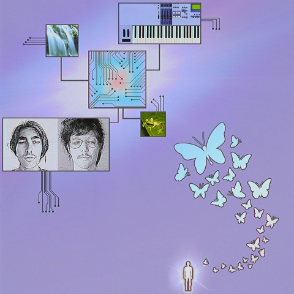

Track No.2
Singularity Boys - Flutter EP · 2020

Singularity Boys is a long distance multimedia contact between
Charlie Yin and Anton Krueger. Communication is made via
remote viewing to seek impressions on nature + technology in
areas spanning the San Luis Valley between Colorado and Texas.
www.singularityboys.net/
リンク